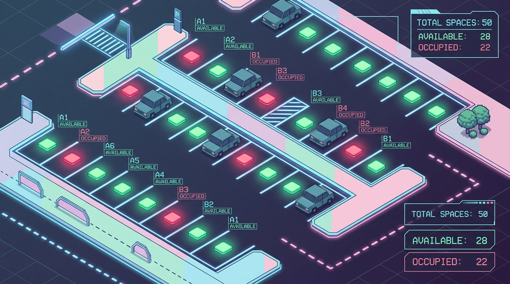
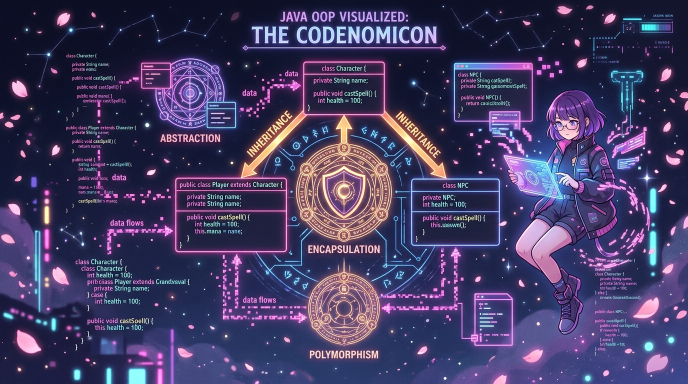
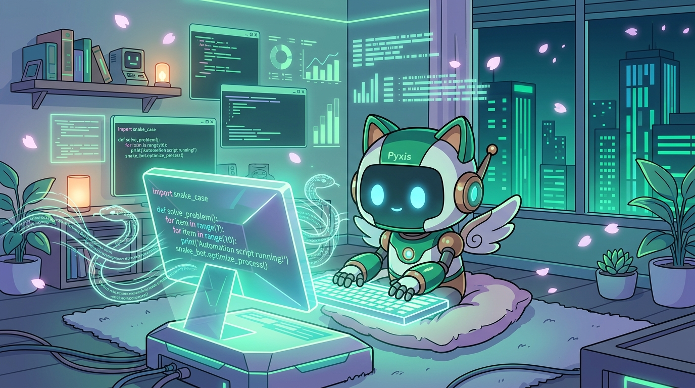

Production Scalability
Architected microservices handling high-throughput web traffic with an uptime mindset of 99.9%.
Weaving high-performance distributed systems, scalable architectures, and magical anime-inspired digital realms into reality with precision and passion. ✨
Software engineer bridging elegant systems architecture, clean code principles, and delightful digital experiences.

Hello! I'm Dharini M S, a software engineer with a deep passion for building scalable web applications, distributed backend services, and intuitive digital interfaces. My focus lies at the intersection of robust systems engineering and clean, human-centered design.
Whether architecting event-driven microservices, fine-tuning database query performance, or crafting fluid web frontends with modern frameworks, I believe in writing readable, maintainable, and thoroughly tested code that stands the test of time.
Architected microservices handling high-throughput web traffic with an uptime mindset of 99.9%.
Reduced end-to-end API latency by up to 45% using Redis caching and asynchronous queues.
Seamlessly delivered full-stack products using TypeScript, React, Node.js, Go, Docker, and AWS.
Instituted automated CI test pipelines, increasing unit and integration coverage past 90%.
When I step away from code editors and terminal sessions, here is what fuels my creativity:
Core spells I've mastered on my journey as a software engineer — each carved through hands-on projects, challenges, and relentless practice. ✨
Designing clean, maintainable systems using encapsulation, polymorphism, and SOLID principles.
Solving complex problems with efficiency — arrays, trees, graphs, sorting, and dynamic programming.
Automating repetitive workflows, file handling, and system operations with Python scripts.
Low-level programming expertise with memory management, pointers, and embedded logic in C.
Breaking down complex engineering challenges into elegant, testable, and maintainable solutions.
Following industry best practices including version control, code reviews, and clean architecture.
Every chapter of growth, learning, and building — from my first classroom to my first real-world project. 🌸
St. Mary's English Medium School
Completed Secondary School Leaving Certificate (SSLC) with a strong foundation in Mathematics, Science, and English. Developed early interests in logical thinking and problem-solving that would later guide a career in engineering.
Adhichunchangiri Independent PU College, Shivamogga
Pursued the PCMB (Physics, Chemistry, Mathematics, Biology) stream at Adhichunchangiri Independent PU College. Built analytical and scientific rigour through intensive coursework, qualifying for engineering entrance and earning admission to B.E.
Adhichunchangiri Institute of Technology, Chikkamagaluru
Currently pursuing B.E. at AIT Chikkamagaluru, one of Karnataka's leading engineering institutions. Specialising in core Computer Science concepts including Data Structures, Algorithms, Object-Oriented Programming, and Systems Design. Actively working on projects that bridge hardware and software.
B.E. Project — Adhichunchangiri Institute of Technology
Designed and built an IoT-enabled smart parking system that uses ultrasonic and IR sensors to detect vehicle occupancy in real time. The system displays available parking slots on an LCD display and can notify users via a web interface. Combines embedded systems programming with real-world sensor integration and data visualisation.
A showcase of systems I've designed, built, and shipped — each card opens a full project detail view. ⚔️

⭐ FeaturedIoT-based parking slot detector using ultrasonic & IR sensors with real-time LCD display and web notification system.

☕ OOPA full OOP-based banking system built in Java demonstrating inheritance, polymorphism, encapsulation, and interface-driven design.

🐍 PythonA collection of Python automation scripts for file organisation, web scraping, report generation, and repetitive task scheduling.
A quick walkthrough of my journey, projects, and what I'm building next. 🎬
This short video is a personal introduction to my engineering portfolio — covering my academic background from St. Mary's English Medium School through my ongoing B.E. at AIT Chikkamagaluru, a live walkthrough of the Smart Parking System project, and a glimpse into the technologies I'm passionate about: Java, C, and Python.
Feedback from my professors, project teammates, and mentors.
“Dharini demonstrated exceptional technical skills during the Smart Parking System project. Her ability to seamlessly integrate hardware sensors with software logic in Embedded C and Arduino is remarkable for a B.E. student.”
“An incredibly dedicated teammate. Whether we were debugging Java OOP assignments or fine-tuning Python automation scripts, Dharini's logical approach and clean code always saved the day.”
“I had the pleasure of mentoring Dharini during an IoT bootcamp. She is a fast learner with a keen eye for both system architecture and user-facing design. A promising software engineer.”
Transmit an instant message or query my AI familiar about projects, tech stack, and quests.
Have a project in mind or just want to say hi? My inbox is always open.
Currently open to new opportunities, internships, and collaborative projects. Let's build something amazing together!